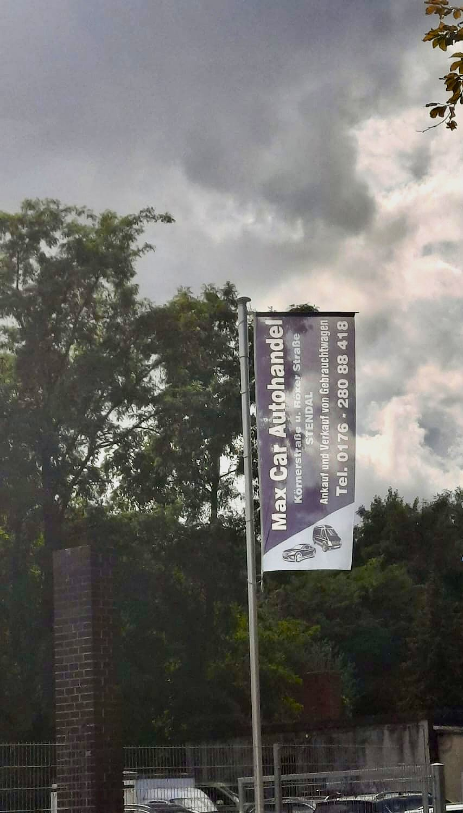

Fahnen und Displays – Ihre Werbung in Bewegung
Ob auf Messen, vor Ihrem Firmengebäude oder bei Veranstaltungen – unsere Fahnen und Roll-Ups präsentieren Ihr Unternehmen wirkungsvoll.
Unsere Produkte im Überblick:
- Hissfahnen – repräsentativ und aufmerksamkeitsstark vor Ihrem Unternehmensstandort.
- Event- und Messefahnen – flexibel, leicht aufzustellen und sofort einsatzbereit.
- Beachflags und Werbefahnen – ideal für Promotion, Sportveranstaltungen und Aktionen.
- Roll-Ups – kompakt, mobil und schnell aufgestellt, perfekt für Messen, Shops und Events.
Ihre Vorteile:
- Kräftiger Digitaldruck für intensive Farben und klare Botschaften
- Geeignet für den Einsatz drinnen und draußen
- Verschiedene Größen, Formen und Systeme verfügbar
- Komplettlösungen inklusive Zubehör wie Masten und Gestelle
Egal, ob im Wind vor Ihrem Firmenhof, als Eyecatcher auf Messen oder als Informationsmedium bei Veranstaltungen – unsere Fahnen und Roll-Ups machen Ihre Botschaft sichtbar und unvergesslich.
